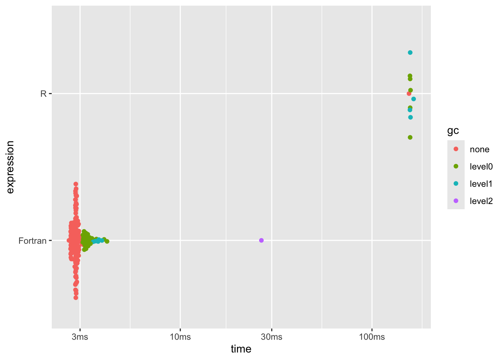
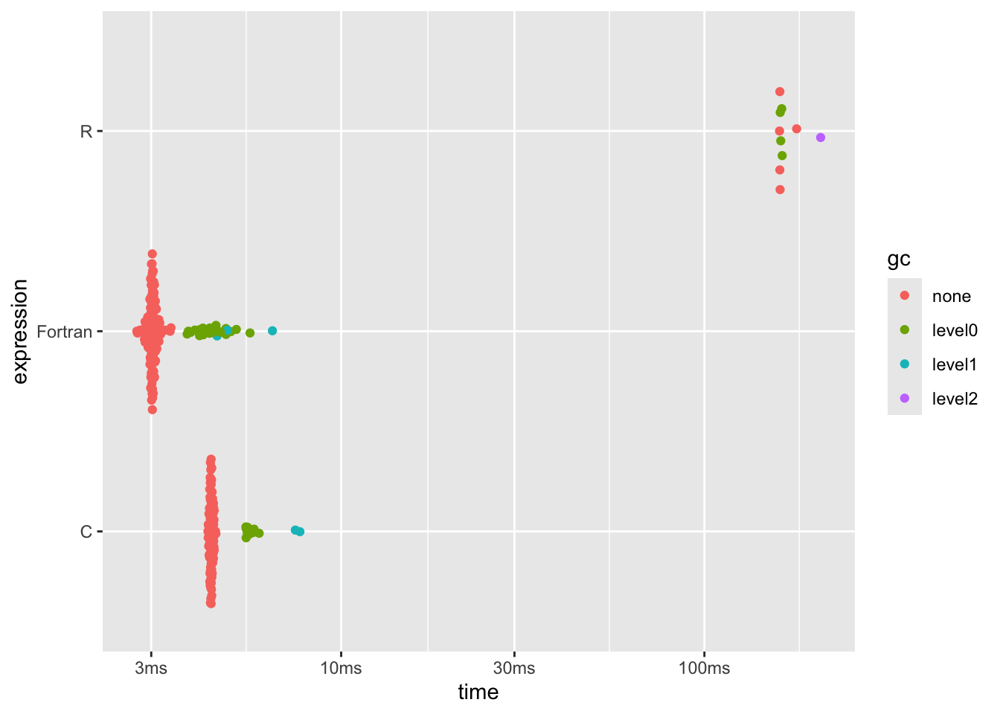
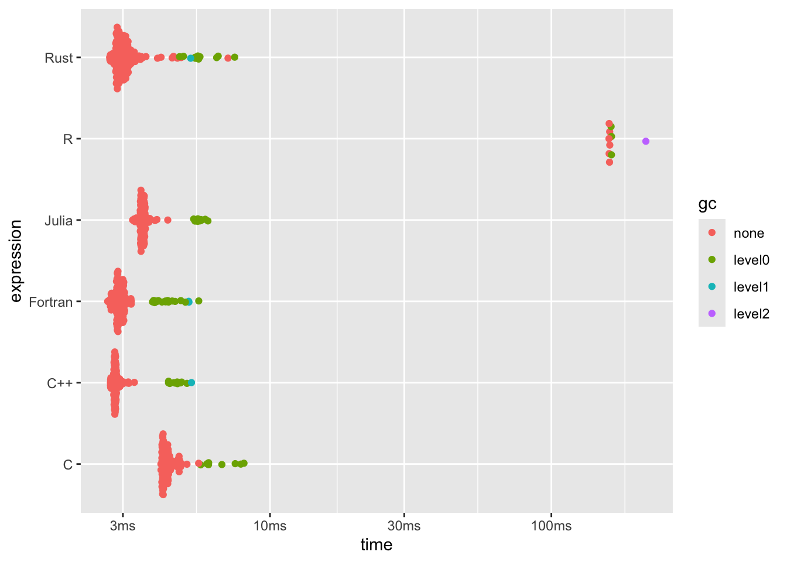
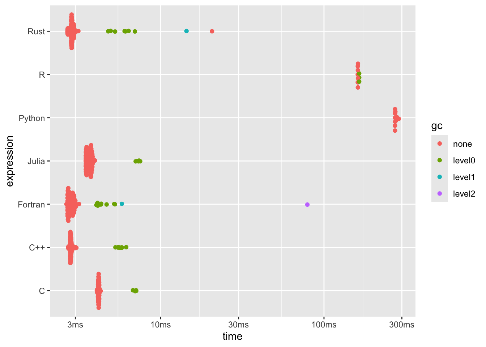
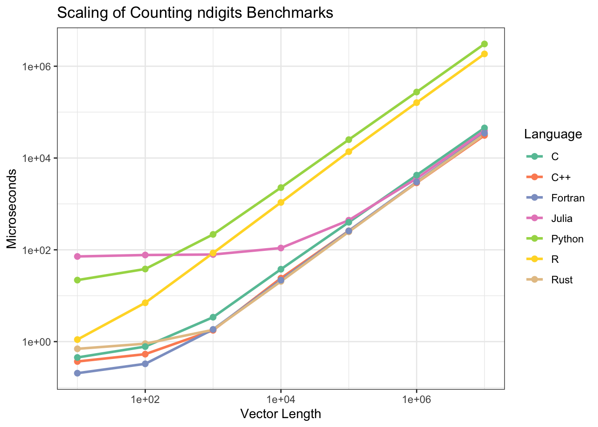

When things run slower than we’d like in R we tend to reach for another, usually
compiled, language, and move our code there. What if it “just happened”? What
started out as a silly exploration of how to count digits ended up with a race
to see which language does it fastest. Maybe some surprises here for some, maybe
some bad implementations on my part - let’s find out.
When things run slower than we’d like in R we tend to reach for another, usually
compiled, language, and move our code there. What if it “just happened”? What
started out as a silly exploration of how to count digits ended up with a race
to see which language does it fastest. Maybe some surprises here for some, maybe
some bad implementations on my part - let’s find out.
I saw some recent activity on {quickr};
Tomasz Kalinowski’s R to Fortran transpiler - I had starred the repo a long time
ago (and in haste, accidentally unstarred it, then re-starred it) but never
really played with it. I’m familiar with slightly older Fortran; nowadays it’s
called “modern Fortran”, but I did my PhD using Fortran95 in the late 2000’s.
I’ve even pushed some of my postdoc code to GitHub
after getting it working again for a recent student.
I figured now was a great chance to have a proper play with the package.
{quickr} “transpiles” R code which means it takes R code converts the syntax
into Fortran syntax using the same variables and equivalent functions where
available. The idea being that when R isn’t working fast enough for you, instead
of re-writing your function in something like C++ (via {Rcpp}) it can
automatically write a Fortran version of your code and compile that into a
highly performant function which can be called with the same arguments. Faster
running code with no additional effort - sounds great!
The README for {quickr} has some examples highlighting how it can improve the
performance of some functions beyond what {Rcpp} can offer, in some cases
approaching C speeds. That’s not surprising to those who know Fortran - it’s
still very much used in theoretical physics partly because of the performance,
partly due to the existing support in that field, but also partly because despite
being an ‘old’ language, it’s actually pretty nice to use.
One of the big advantages of Fortran I found when learning other languages
after learning Fortran was that there’s no manual memory management. If you
want a vector or an array/tensor with many dimensions, you just ask for it
(specifying a size along each dimension or dynamically sizing, but never
manually freeing memory). R is known for its statistics chops, but under the
hood of some of these functions still call out to Fortran code.
I wanted some example code to try out myself and see if I even recognise the
Fortran it produces. I didn’t just want to use the example code from the package,
so what could I use?
In this post I
celebrated the fact that Julia has a ndigits() function, while in R I cheated
and used nchar() which works fine provided you’re dealing with non-negative
integers up to 99999, outside of which it doesn’t do what you want
nchar(99) # 99 = 2 characters
## [1] 2
nchar(99999) # 99999 = 5 characters
## [1] 5
nchar(99999+1) # 1e+05 = 5 characters
## [1] 5
nchar(-99) # -99 = 3 characters
## [1] 3
I had some interesting discussions on Mastodon
about different ways to implement ndigits() properly for R and in the end,
re-implementing the Julia solution seemed to work great for all edge cases. I
decided to use this for my Fortran testing with {quickr}.
I got the package installed and the compiler hooked up correctly so that I could
run the example code, then tried adapting it to the ndigits() problem.
R
The R code I started with was
nd_R <- function(x) {
out <- integer(length(x))
x <- abs(x / 10)
for (v in seq_along(x)) {
d <- 1
m <- 1
while (m <= x[v]) {
m <- m * 10
d <- d + 1
}
out[v] <- d
}
out
}
nd_R(c(123456L, 234L, -72L))
## [1] 6 3 2
and while this looks like a moderate amount of code, in essence it’s taking the
absolute value of the input (since we want to ignore negatives, and which is
nicely vectorised in R), dividing by 10, checking if we’ve exceeded the input
yet, and if not, stepping through successive multiples of 10 until we do, which
finds the first power of 10 that is greater than our value, indicating the
number of digits. For what it’s worth, this is why in that post I noted an
alternative route to achieving this; ceil(log10(x)).
Fortran
Hoping to immediately transpile this to Fortran, I immediately hit my first
snag; {quickr} hasn’t yet implemented while() so I can’t transpile this
exactly as I have it. There’s no early return() or break either, so I can’t
just exit an oversized loop early. Without an alternative, I’m going to cheat a
bit and just run a loop 12 times - this puts an upper limit on the input to a 12
digit number, but I can live with that.
Update while writing the post: I suppose good things come to those who wait -
on digging through some source code for this post I saw that while has been
implemented in the last week, so I’m going to pretend that was always the case.
The other piece this transpiler needs is a type declaration for the input; R
is fully dynamic in that a function can take any type of object and it’s up to
the function to decide what to do with it. Fortran is a bit stricter, and
requires types to be annotated, so I need to add a declare(type()) to the code.
nd2f <- function(x) {
declare(
type(x = integer(NA))
)
out <- integer(length(x))
x <- abs(x / 10L)
for (v in seq_along(out)) {
d <- 1L
m <- 1L
while (m <= x[v]) {
m <- m * 10L
d <- d + 1L
}
out[v] <- d
}
out
}
NOTE: the original version of this post used double() values but as
@toddixd noted, there’s an additional
performance improvement to be made if we restrict to integers, which the values
will actually be.
Note that this is still very much R code at this point - I can even run it
in R and get the same answers as before
nd2f(c(123456L, 234L, -72L))
## [1] 6 3 2
What surprised me here is that declare() is a base R function (not from
{quickr}) intended for “specifying information about R code for use by the
interpreter, compiler, and code analysis tools”. I was originally thinking it
would be neat to be able to leverage that for some type-checking on the R side
as well as being informative to the Fortran code, but it “ignores the arguments
and returns NULL invisibly”, so no go on this throwing an error from R
int_id <- function(x) {
declare(type(x = integer(NA)))
x
}
int_id(3L)
## [1] 3
int_id(1.5)
## [1] 1.5
The magic happens when we ask {quickr} to do the transpilation.
The type information is used in the Fortran code, so compiling the id() example
produces something that is more restrictive on types
int_id_F <- quickr::quick(int_id)
int_id_F(3L)
## [1] 3
int_id_F(1.5)
## Error in int_id_F(1.5): typeof(x) must be 'integer', not 'double'
I can inspect the generated code with r2f(), though one wouldn’t normally need
to - it’s interesting to see what the Fortran code looks like
quickr:::r2f(int_id)
## subroutine int_id(x, x__len_) bind(c)
## use iso_c_binding, only: c_int, c_ptrdiff_t
## implicit none
##
## ! manifest start
## ! sizes
## integer(c_ptrdiff_t), intent(in), value :: x__len_
##
## ! args
## integer(c_int), intent(in out) :: x(x__len_)
## ! manifest end
##
##
## end subroutine
##
## @r: function (x)
## {
## declare(type(x = integer(NA)))
## x
## }
## @closure: function (x)
## {
## declare(type(x = integer(NA)))
## x
## }
But of course, this just returns the value and that’s not particularly
enlightening. Doing the same for the ndigits code
quickr:::r2f(nd2f)
## subroutine nd2f(x, out, x__len_) bind(c)
## use iso_c_binding, only: c_int, c_ptrdiff_t
## implicit none
##
## ! manifest start
## ! sizes
## integer(c_ptrdiff_t), intent(in), value :: x__len_
##
## ! args
## integer(c_int), intent(in out) :: x(x__len_)
## integer(c_int), intent(out) :: out(x__len_)
##
## ! locals
## integer(c_int) :: v
## integer(c_int) :: d
## integer(c_int) :: m
## ! manifest end
##
##
## out = 0
## x = abs((x / 10_c_int))
## do v = 1, size(out)
## d = 1_c_int
## m = 1_c_int
## do while ((m <= x(v)))
## m = (m * 10_c_int)
## d = (d + 1_c_int)
## end do
## out(v) = d
## end do
## end subroutine
##
## @r: function (x)
## {
## declare(type(x = integer(NA)))
## out <- integer(length(x))
## x <- abs(x/10L)
## for (v in seq_along(out)) {
## d <- 1L
## m <- 1L
## while (m <= x[v]) {
## m <- m * 10L
## d <- d + 1L
## }
## out[v] <- d
## }
## out
## }
## @closure: function (x)
## {
## declare(type(x = integer(NA)))
## out <- integer(length(x))
## x <- abs(x/10L)
## for (v in seq_along(out)) {
## d <- 1L
## m <- 1L
## while (m <= x[v]) {
## m <- m * 10L
## d <- d + 1L
## }
## out[v] <- d
## }
## out
## }
The subroutine itself looks a lot like the R code; sure, some type annotations
are sprinkled around, do v = 1, size(x) replaces for v in seq_along(x) and
do while replaces while, but I don’t think it’s entirely alien.
What might surprise some is the line
x = abs((x / 10.0_c_double))
Notice there’s no loop around this? Fortran is an array language…
Rank-polymorphism, baby! I covered this in
another post of mine
but thanks to this, abs() is vectorised wherever needed
program test_abs
implicit none
integer, dimension(5) :: i = [-1, 2, -3, 4, -5]
write(*,*) abs(i)
end program test_abs
# 1 2 3 4 5
Generating the compiled Fortran code from nd2f is as easy as
nd_F <- quickr::quick(nd2f)
nd_F
## function (x)
## .External(<pointer: 0x156f21750>, x)
and we see that it’s referencing some external code. This can be called
nd_F(c(123456L, 234L, -72L))
## [1] 6 3 2
with the big benefit that now it’s a LOT faster!
Generating a million random values and excluding any zero values, we can see the
50x performance increase (!!!)
set.seed(1)
nums <- as.integer(runif(1e6, -1, 1) * 1e6)
nums <- nums[nums != 0]
b0 <- bench::mark(
R = nd_R(nums),
Fortran = nd_F(nums),
min_iterations = 10
)
dplyr::arrange(b0[, 1:8], median)
## # A tibble: 2 × 6
## expression min median `itr/sec` mem_alloc `gc/sec`
## <bch:expr> <bch:tm> <bch:tm> <dbl> <bch:byt> <dbl>
## 1 Fortran 2.62ms 2.85ms 353. 7.63MB 117.
## 2 R 156ms 156ms 6.41 19.07MB 57.7
plot(b0)

For those not familiar, this benchmark plot shows the individual times taken for
repeated executions of the code in each ‘expression’, grouped vertically by the
‘expression’ itself (annotated as the language here) with some random scatter to show
the spread of execution times. Points to the left are faster. It’s also worth
noting that bench::mark() defaults to check = TRUE so we can rest assured that
the results from each of the different languages we’re about to explore are
consistent and it’s not some artifact of one language doing less work.
If you run these yourself you’ll get slightly different results. I’m running them
on a newish M3 Macbook Pro.
All that performance increase from just adding one line to the R code and
wrapping it with one other function (resulting in an entirely different program
being written and compiled, producing the correct results).
I should note that in the first iteration of this post (in which while was not yet
supported) I used an excessive for loop which resulted in a
not-as-impressive-but-still-very-impressive 15x performance boost.
R (compiled)
If compiled code is so great, what about just compiling the R code with, e.g.
compiler::cmpfun()?
nd_comp = compiler::cmpfun(nd_R)
nd_comp(c(123456L, 234L, -72L))
## [1] 6 3 2
b1 <- bench::mark(
compiled = nd_comp(nums),
R = nd_R(nums),
Fortran = nd_F(nums),
min_iterations = 10
)
dplyr::arrange(b1[, 1:8], median)
## # A tibble: 3 × 6
## expression min median `itr/sec` mem_alloc `gc/sec`
## <bch:expr> <bch:tm> <bch:tm> <dbl> <bch:byt> <dbl>
## 1 Fortran 2.68ms 3ms 334. 7.63MB 86.5
## 2 compiled 157.78ms 158ms 6.33 19.07MB 14.8
## 3 R 157.06ms 158ms 6.33 19.07MB 9.50
plot(b1)

That doesn’t help; by the time the benchmark was running the nd_R function had
been called enough times for it to be JIT compiled, anyway.
This did get me thinking, though - what about other compiled alternatives?
C
Since I’m going through Harvard’s CS50 ‘Introduction to Computer Science’ course
with R Contributors
to learn a bit more structured C I figured I’d add that via coolbutuseless’
{callme} package. This surely isn’t
the world’s greatest C code, but it compiles and runs…
callme::compile(
"
#include <R.h>
#include <Rinternals.h>
#include <stdlib.h>
#include <math.h>
SEXP nd_C(SEXP vec) {
int *vec_ptr = INTEGER(vec);
SEXP res = PROTECT(allocVector(INTSXP, length(vec)));
int *res_ptr = INTEGER(res);
for (int i = 0; i < length(vec); i++) {
int abs_x = abs(vec_ptr[i] / 10.0);
int d = 1;
int m = 1.0;
while (m <= abs_x) {
m *= 10.0;
d++;
}
res_ptr[i] = d;
}
UNPROTECT(1);
return res;
}
"
)
nd_C(c(123456L, 234L, -72L))
## [1] 6 3 2
So, how does it compare?
b2 <- bench::mark(
C = nd_C(nums),
R = nd_R(nums),
Fortran = nd_F(nums),
min_iterations = 10
)
dplyr::arrange(b2[, 1:8], median)
## # A tibble: 3 × 6
## expression min median `itr/sec` mem_alloc `gc/sec`
## <bch:expr> <bch:tm> <bch:tm> <dbl> <bch:byt> <dbl>
## 1 Fortran 2.74ms 3.02ms 330. 7.63MB 67.7
## 2 C 4.3ms 4.39ms 228. 3.81MB 27.9
## 3 R 161.01ms 161.35ms 6.06 19.07MB 6.06
plot(b2)

Whoa - automatically transpiled Fortran runs faster than (my) C… That’s fast.

Impressively fast
C++
What about C++ via {Rcpp}? Dealing with vectors is made easier by {Rcpp} having
pre-built types compatible with R, and this otherwise looks very similar to the
R code
Sys.setenv("PKG_CXXFLAGS" = "-O3")
nd_Rcpp <- Rcpp::cppFunction(
"
IntegerVector nd(const IntegerVector& x) {
int n = x.size();
IntegerVector out(n);
for (int v = 0; v < n; v++) {
int abs_x = std::abs(x[v] / 10);
int d = 1;
int m = 1;
while (m <= abs_x) {
m *= 10;
d++;
}
out[v] = d;
}
return out;
}
"
)
nd_Rcpp(c(123456L, 234L, -72L))
## [1] 6 3 2
b3 <- bench::mark(
`C++` = nd_Rcpp(nums),
C = nd_C(nums),
R = nd_R(nums),
Fortran = nd_F(nums),
min_iterations = 10
)
dplyr::arrange(b3[, 1:8], median)
## # A tibble: 4 × 6
## expression min median `itr/sec` mem_alloc `gc/sec`
## <bch:expr> <bch:tm> <bch:tm> <dbl> <bch:byt> <dbl>
## 1 C++ 2.71ms 2.84ms 352. 3.82MB 36.8
## 2 Fortran 2.69ms 2.91ms 344. 7.63MB 57.7
## 3 C 4.24ms 4.36ms 229. 3.81MB 22.5
## 4 R 157.52ms 160.9ms 6.04 19.07MB 4.03
plot(b3)

This one seems to wander around a bit; on different runs I’ve seen performance
equal or better to the C code and on others, about 3x as long, but generally
pretty fast.
Julia
After all of this, I remembered that I was comparing the Julia implementation -
how does that perform? Julia is a JIT/AOT compiled language, so maybe it’s not
too bad… I can still call that directly from R
JuliaCall::julia_eval("ndigits.([123456, 234, -72])")
## [1] 6 3 2
keeping in mind that the Julia function ndigits (the implementation for which
I’ve borrowed for all of the examples, so we are dealing with the same
algorithm in each case) is in fact compiled, but available as ndigits(). As
long as I make the vector available in a Julia session (as integers; the
function is only defined for integers) I can run this
JuliaCall::julia_assign("nums", nums)
b4 <- bench::mark(
Julia = JuliaCall::julia_eval("ndigits.(nums)"),
`C++` = nd_Rcpp(nums),
C = nd_C(nums),
R = nd_R(nums),
Fortran = nd_F(nums),
min_iterations = 10
)
dplyr::arrange(b4[, 1:8], median)
## # A tibble: 5 × 6
## expression min median `itr/sec` mem_alloc `gc/sec`
## <bch:expr> <bch:tm> <bch:tm> <dbl> <bch:byt> <dbl>
## 1 C++ 2.7ms 2.82ms 353. 3.81MB 26.9
## 2 Fortran 2.7ms 2.93ms 339. 7.63MB 48.5
## 3 Julia 3.23ms 3.77ms 232. 3.81MB 22.6
## 4 C 4.13ms 4.19ms 231. 3.81MB 10.7
## 5 R 158.75ms 159.51ms 6.27 19.07MB 2.69
plot(b4)
Ten points to Julia - remember, this is an interpreted language.

That’s really fast!
I should note there’s work being done towards making Julia binaries out of scripts, but this still has a startup time
of a few dozen milliseconds for even a Hello, World example.
Rust
One more? What about Rust? We can use {rextendr} to call Rust code inline,
making sure to target the release profile for maximum performance
rextendr::rust_function(
r"(
fn nd_Rust(x: &[i32]) -> Vec<i32> {
let mut out = vec![0; x.len()];
for v in 0..x.len() {
let abs_x = (x[v].abs() / 10);
let mut d = 1;
let mut m = 1;
while m <= abs_x {
m *= 10;
d += 1;
}
out[v] = d;
}
out
}
)",
profile = "release"
)
## ℹ build directory: '/private/var/folders/1h/k6c5hb4d2qx07m8kfqb54f9c0000gn/T/RtmpLMk1G9/filec1e53eb70acb'
## ✔ Writing '/private/var/folders/1h/k6c5hb4d2qx07m8kfqb54f9c0000gn/T/RtmpLMk1G9/filec1e53eb70acb/target/extendr_wrappers.R'
nd_Rust(c(123456L, 234L, -72L))
## [1] 6 3 2
b5 <- bench::mark(
Rust = nd_Rust(nums),
Julia = JuliaCall::julia_eval("ndigits.(nums)"),
`C++` = nd_Rcpp(nums),
C = nd_C(nums),
R = nd_R(nums),
Fortran = nd_F(nums),
min_iterations = 10
)
dplyr::arrange(b5[, 1:8], median)
## # A tibble: 6 × 6
## expression min median `itr/sec` mem_alloc `gc/sec`
## <bch:expr> <bch:tm> <bch:tm> <dbl> <bch:byt> <dbl>
## 1 C++ 2.71ms 2.82ms 353. 3.81MB 27.0
## 2 Fortran 2.65ms 2.89ms 344. 7.63MB 42.6
## 3 Rust 2.69ms 2.99ms 323. 3.82MB 25.1
## 4 Julia 3.25ms 3.54ms 283. 3.81MB 22.4
## 5 C 4.09ms 4.28ms 231. 3.81MB 17.9
## 6 R 160.23ms 160.72ms 6.22 19.07MB 4.15
plot(b5)


Ridiculous speeds!
We are truly spoiled for choice these days - not only do we have a plethora of
languages we can call directly from R, but several languages which run faster than
even (at least my implementation of) C and count number of digits of
a million values in under 4ms.
After enforcing integers in the R code which was transpiled to Fortran, we’ve
somehow managed to achieve Rust speeds with nearly 0 additional effort. I’m
very impressed!
Python
Just for funsies, what about Python? It’s not a compiled language, but maybe if
I use numpy it will be fast … ? It’s at least another language I can call from
R that is generally considered ‘faster’. Is it?
library(reticulate)
reticulate::py_run_string('
import numpy as np
def nd_python(x):
x = np.asarray(x)
out = np.zeros(len(x), dtype=int)
for v in range(len(x)):
abs_x = abs(x[v] / 10)
d = 1
m = 1
while m <= abs_x:
m *= 10
d += 1
out[v] = d
return out.tolist()
')
py$nd_python(c(123456L, 234L, -72L))
## [1] 6 3 2
b6 <- bench::mark(
Python = py$nd_python(nums),
Rust = nd_Rust(nums),
Julia = JuliaCall::julia_eval("ndigits.(nums)"),
`C++` = nd_Rcpp(nums),
C = nd_C(nums),
R = nd_R(nums),
Fortran = nd_F(nums),
min_iterations = 10
)
dplyr::arrange(b6[, 1:8], median)
## # A tibble: 7 × 6
## expression min median `itr/sec` mem_alloc `gc/sec`
## <bch:expr> <bch:tm> <bch:tm> <dbl> <bch:byt> <dbl>
## 1 C++ 2.71ms 2.81ms 354. 3.81MB 15.1
## 2 Fortran 2.65ms 2.81ms 355. 7.63MB 35.2
## 3 Rust 2.69ms 2.85ms 336. 3.81MB 17.9
## 4 Julia 3.48ms 3.71ms 274. 3.81MB 10.8
## 5 C 4.06ms 4.17ms 240. 3.81MB 8.43
## 6 R 161.01ms 161.26ms 6.20 19.07MB 2.66
## 7 Python 272.1ms 272.73ms 3.63 3.81MB 0
plot(b6)

In fairness, there’s overhead here involved with calling it from R, but I think
that’s apples-to-apples considering I’m doing the same with all the compiled
languages.
Does it scale?
I’ve been running these benchmarks for a million numbers, but how do the results
scale with that size? What if it’s just a handful of numbers? What about in
between these extremes? Running the benchmarks at various scales should show this.
n_vals <- 10^(1:7)
scales <- purrr::map_df(n_vals, ~{
set.seed(1)
nums <- as.integer(runif(.x, -1, 1) * .x)
nums <- nums[nums != 0]
JuliaCall::julia_assign("nums", nums)
b <- bench::mark(
Python = py$nd_python(nums),
Rust = nd_Rust(nums),
Julia = JuliaCall::julia_eval("ndigits.(nums)"),
`C++` = nd_Rcpp(nums),
C = nd_C(nums),
R = nd_R(nums),
Fortran = nd_F(nums),
min_iterations = 10,
check = TRUE
)
dplyr::bind_cols(vec_len = .x, b[, 1:8])
})
## Warning: Some expressions had a GC in every iteration; so filtering is
## disabled.
library(ggplot2)
ggplot(scales,
aes(x = vec_len,
y = 1e6*as.numeric(median),
col = as.character(expression)
)) +
geom_line(linewidth = 1) +
geom_point(size = 2) +
scale_x_log10() +
scale_y_log10() +
scale_color_discrete(palette = "Set2") +
labs(
title = "Scaling of Counting ndigits Benchmarks",
x = "Vector Length",
y = "Microseconds",
color = "Language"
) +
theme_bw()

What a nice, log-log linear result with that one exception - Julia is pretty
constant up until 1000, after which it starts to follow the same trajectory as
the other languages - presumably that’s just the overhead of starting up the
Julia runtime, which is a known bottleneck.
There’s definitely a clear divide between the interpreted languages (R and Python)
and the compiled ones.
At lower vector lengths there’s a little bit of a spread with Fortran really showing
off at the lowest lengths
dplyr::arrange(scales[scales$vec_len == 10, ], median)
## # A tibble: 7 × 7
## vec_len expression min median `itr/sec` mem_alloc `gc/sec`
## <dbl> <bch:expr> <bch:tm> <bch:tm> <dbl> <bch:byt> <dbl>
## 1 10 Fortran 163.9ns 205.12ns 4369885. 0B 0
## 2 10 C++ 286.8ns 369.04ns 2505953. 0B 0
## 3 10 C 410ns 451.23ns 1955486. 0B 0
## 4 10 Rust 532.9ns 696.86ns 1391547. 0B 0
## 5 10 R 984.2ns 1.11µs 822195. 0B 82.2
## 6 10 Python 20.5µs 21.89µs 44487. 0B 8.90
## 7 10 Julia 69.3µs 71.67µs 13612. 0B 0
but we’re looking at sub microsecond differences - what will you do with all
that free time?
By the time we’re looking at 1000 values, the compiled languages are all about
the same
dplyr::arrange(scales[scales$vec_len == 1000, ], median)
## # A tibble: 7 × 7
## vec_len expression min median `itr/sec` mem_alloc `gc/sec`
## <dbl> <bch:expr> <bch:tm> <bch:tm> <dbl> <bch:byt> <dbl>
## 1 1000 C++ 1.48µs 1.76µs 533778. 3.95KB 0
## 2 1000 Rust 1.56µs 1.8µs 487209. 3.95KB 0
## 3 1000 Fortran 1.15µs 1.84µs 558984. 7.91KB 0
## 4 1000 C 3.08µs 3.4µs 281578. 3.95KB 0
## 5 1000 Julia 72.73µs 79.05µs 12351. 3.95KB 2.05
## 6 1000 R 78.23µs 85.2µs 11640. 19.66KB 2.03
## 7 1000 Python 198.32µs 216.73µs 4565. 3.95KB 0
At ten million values it’s a complete wash the compiled languages with maybe a
slight drop for C
dplyr::arrange(scales[scales$vec_len == 1e7, ], median)
## # A tibble: 7 × 7
## vec_len expression min median `itr/sec` mem_alloc `gc/sec`
## <dbl> <bch:expr> <bch:tm> <bch:tm> <dbl> <bch:byt> <dbl>
## 1 10000000 C++ 30.98ms 31.1ms 31.1 38.1MB 7.77
## 2 10000000 Rust 32.54ms 32.77ms 29.5 38.1MB 5.91
## 3 10000000 Fortran 32.32ms 34.8ms 23.8 76.3MB 11.9
## 4 10000000 Julia 36.4ms 39.59ms 18.2 38.1MB 3.64
## 5 10000000 C 44.91ms 45.25ms 21.7 38.1MB 3.95
## 6 10000000 R 1.84s 1.86s 0.536 190.7MB 0.536
## 7 10000000 Python 3.02s 3.06s 0.327 38.1MB 0.0654
All very interesting!
It would probably be worthwhile digging into the memory usage of all of these
since there’s a big difference that likely indicates something different is
happening, but that’s beyond my understanding - feel free to let me know!
So, what might be the reason for Rust and Julia to be so fast, even compared to
C? These are newer languages with a lot of focus on their compilers, and it’s
entirely possible that they’re able to make some better optimisations compared
to a very general C compiler, but more likely that’s the upper limit of what a
computer can do in that much time and my C code is non-optimal.
Conclusions
Back to the original point, though - the transpilation does an amazing job
of improving the code without having to write more code in a different
language. Sure, Julia solves this ‘two language problem’ by just being
ridiculously fast to begin with, but if I am writing R code, it’s fantastic to
see there’s an option for just “making it go brrr” without actually doing
anything extra.
Not all of R has been translated to Fortran so there’s a lot of code that won’t
transpile just yet, but it’s a truly inspiring project that I’ll surely be
keeping a close eye on.
I’d love to hear what people think about these comparisons - are there points I’ve
overlooked? Better ways to do it? Improvements to my implementations which change
the results? Other considerations I’ve missed? As always, I can be found on
Mastodon and the comment section below.
devtools::session_info()
## ─ Session info ───────────────────────────────────────────────────────────────
## setting value
## version R version 4.4.1 (2024-06-14)
## os macOS 15.5
## system aarch64, darwin20
## ui X11
## language (EN)
## collate en_US.UTF-8
## ctype en_US.UTF-8
## tz Australia/Adelaide
## date 2025-06-29
## pandoc 3.4 @ /Applications/RStudio.app/Contents/Resources/app/quarto/bin/tools/aarch64/ (via rmarkdown)
##
## ─ Packages ───────────────────────────────────────────────────────────────────
## package * version date (UTC) lib source
## beeswarm 0.4.0 2021-06-01 [1] CRAN (R 4.4.1)
## bench 1.1.4 2025-01-16 [1] CRAN (R 4.4.1)
## blogdown 1.21.1 2025-06-28 [1] Github (rstudio/blogdown@33313a5)
## bookdown 0.41 2024-10-16 [1] CRAN (R 4.4.1)
## brio 1.1.5 2024-04-24 [1] CRAN (R 4.4.0)
## bslib 0.8.0 2024-07-29 [1] CRAN (R 4.4.0)
## cachem 1.1.0 2024-05-16 [1] CRAN (R 4.4.0)
## callme 0.1.10 2024-07-27 [1] CRAN (R 4.4.0)
## cli 3.6.4 2025-02-13 [1] CRAN (R 4.4.1)
## codetools 0.2-20 2024-03-31 [1] CRAN (R 4.4.1)
## devtools 2.4.5 2022-10-11 [1] CRAN (R 4.4.0)
## dichromat 2.0-0.1 2022-05-02 [1] CRAN (R 4.4.1)
## digest 0.6.37 2024-08-19 [1] CRAN (R 4.4.1)
## dotty 0.1.0 2024-08-30 [1] CRAN (R 4.4.1)
## dplyr 1.1.4 2023-11-17 [1] CRAN (R 4.4.0)
## ellipsis 0.3.2 2021-04-29 [1] CRAN (R 4.4.0)
## evaluate 1.0.3 2025-01-10 [1] CRAN (R 4.4.1)
## farver 2.1.2 2024-05-13 [1] CRAN (R 4.4.0)
## fastmap 1.2.0 2024-05-15 [1] CRAN (R 4.4.0)
## fs 1.6.5 2024-10-30 [1] CRAN (R 4.4.1)
## generics 0.1.3 2022-07-05 [1] CRAN (R 4.4.0)
## ggbeeswarm 0.7.2 2023-04-29 [1] CRAN (R 4.4.0)
## ggplot2 * 3.5.2.9001 2025-06-15 [1] Github (tidyverse/ggplot2@9f80c8c)
## glue 1.8.0 2024-09-30 [1] CRAN (R 4.4.1)
## gtable 0.3.6 2024-10-25 [1] CRAN (R 4.4.1)
## here 1.0.1 2020-12-13 [1] CRAN (R 4.4.0)
## htmltools 0.5.8.1 2024-04-04 [1] CRAN (R 4.4.0)
## htmlwidgets 1.6.4 2023-12-06 [1] CRAN (R 4.4.0)
## httpuv 1.6.15 2024-03-26 [1] CRAN (R 4.4.0)
## jquerylib 0.1.4 2021-04-26 [1] CRAN (R 4.4.0)
## jsonlite 2.0.0 2025-03-27 [1] CRAN (R 4.4.1)
## JuliaCall 0.17.6 2024-12-07 [1] CRAN (R 4.4.1)
## knitr 1.50 2025-03-16 [1] CRAN (R 4.4.1)
## later 1.4.1 2024-11-27 [1] CRAN (R 4.4.1)
## lattice 0.22-6 2024-03-20 [1] CRAN (R 4.4.1)
## lifecycle 1.0.4 2023-11-07 [1] CRAN (R 4.4.0)
## magrittr 2.0.3 2022-03-30 [1] CRAN (R 4.4.0)
## Matrix 1.7-1 2024-10-18 [1] CRAN (R 4.4.1)
## memoise 2.0.1 2021-11-26 [1] CRAN (R 4.4.0)
## mime 0.12 2021-09-28 [1] CRAN (R 4.4.0)
## miniUI 0.1.1.1 2018-05-18 [1] CRAN (R 4.4.0)
## pillar 1.10.1 2025-01-07 [1] CRAN (R 4.4.1)
## pkgbuild 1.4.7 2025-03-24 [1] CRAN (R 4.4.1)
## pkgconfig 2.0.3 2019-09-22 [1] CRAN (R 4.4.0)
## pkgload 1.4.0 2024-06-28 [1] CRAN (R 4.4.0)
## png 0.1-8 2022-11-29 [1] CRAN (R 4.4.0)
## processx 3.8.6 2025-02-21 [1] CRAN (R 4.4.1)
## profmem 0.7.0 2025-05-02 [1] CRAN (R 4.4.1)
## profvis 0.4.0 2024-09-20 [1] CRAN (R 4.4.1)
## promises 1.3.2 2024-11-28 [1] CRAN (R 4.4.1)
## ps 1.9.0 2025-02-18 [1] CRAN (R 4.4.1)
## purrr 1.0.4 2025-02-05 [1] CRAN (R 4.4.1)
## quickr 0.1.0.9000 2025-06-29 [1] Github (t-kalinowski/quickr@254b4d0)
## R6 2.6.1 2025-02-15 [1] CRAN (R 4.4.1)
## RColorBrewer 1.1-3 2022-04-03 [1] CRAN (R 4.4.0)
## Rcpp 1.0.14 2025-01-12 [1] CRAN (R 4.4.1)
## remotes 2.5.0 2024-03-17 [1] CRAN (R 4.4.1)
## reticulate * 1.42.0 2025-03-25 [1] CRAN (R 4.4.1)
## rextendr 0.3.1 2023-06-20 [1] CRAN (R 4.4.0)
## rlang 1.1.5 2025-01-17 [1] CRAN (R 4.4.1)
## rmarkdown 2.28 2024-08-17 [1] CRAN (R 4.4.0)
## rprojroot 2.0.4 2023-11-05 [1] CRAN (R 4.4.0)
## rstudioapi 0.17.1 2024-10-22 [1] CRAN (R 4.4.1)
## S7 0.2.0 2024-11-07 [1] CRAN (R 4.4.1)
## sass 0.4.9 2024-03-15 [1] CRAN (R 4.4.0)
## scales 1.4.0 2025-04-24 [1] CRAN (R 4.4.1)
## sessioninfo 1.2.2 2021-12-06 [1] CRAN (R 4.4.0)
## shiny 1.9.1 2024-08-01 [1] CRAN (R 4.4.0)
## stringi 1.8.4 2024-05-06 [1] CRAN (R 4.4.0)
## tibble 3.2.1 2023-03-20 [1] CRAN (R 4.4.0)
## tidyr 1.3.1 2024-01-24 [1] CRAN (R 4.4.0)
## tidyselect 1.2.1 2024-03-11 [1] CRAN (R 4.4.0)
## urlchecker 1.0.1 2021-11-30 [1] CRAN (R 4.4.0)
## usethis 3.1.0.9000 2025-03-31 [1] Github (r-lib/usethis@a653d6e)
## utf8 1.2.4 2023-10-22 [1] CRAN (R 4.4.0)
## vctrs 0.6.5 2023-12-01 [1] CRAN (R 4.4.0)
## vipor 0.4.7 2023-12-18 [1] CRAN (R 4.4.1)
## withr 3.0.2 2024-10-28 [1] CRAN (R 4.4.1)
## xfun 0.51 2025-02-19 [1] CRAN (R 4.4.1)
## xtable 1.8-4 2019-04-21 [1] CRAN (R 4.4.0)
## yaml 2.3.10 2024-07-26 [1] CRAN (R 4.4.0)
##
## [1] /Library/Frameworks/R.framework/Versions/4.4-arm64/Resources/library
##
## ─ Python configuration ───────────────────────────────────────────────────────
## python: /Users/jono/Library/Caches/org.R-project.R/R/reticulate/uv/cache/archive-v0/2tc-cviHm3ODucI_hIfUb/bin/python3
## libpython: /Users/jono/Library/Caches/org.R-project.R/R/reticulate/uv/python/cpython-3.11.12-macos-aarch64-none/lib/libpython3.11.dylib
## pythonhome: /Users/jono/Library/Caches/org.R-project.R/R/reticulate/uv/cache/archive-v0/2tc-cviHm3ODucI_hIfUb:/Users/jono/Library/Caches/org.R-project.R/R/reticulate/uv/cache/archive-v0/2tc-cviHm3ODucI_hIfUb
## virtualenv: /Users/jono/Library/Caches/org.R-project.R/R/reticulate/uv/cache/archive-v0/2tc-cviHm3ODucI_hIfUb/bin/activate_this.py
## version: 3.11.12 (main, Apr 9 2025, 03:49:53) [Clang 20.1.0 ]
## numpy: /Users/jono/Library/Caches/org.R-project.R/R/reticulate/uv/cache/archive-v0/2tc-cviHm3ODucI_hIfUb/lib/python3.11/site-packages/numpy
## numpy_version: 2.3.1
##
## NOTE: Python version was forced by py_require()
##
## ──────────────────────────────────────────────────────────────────────────────